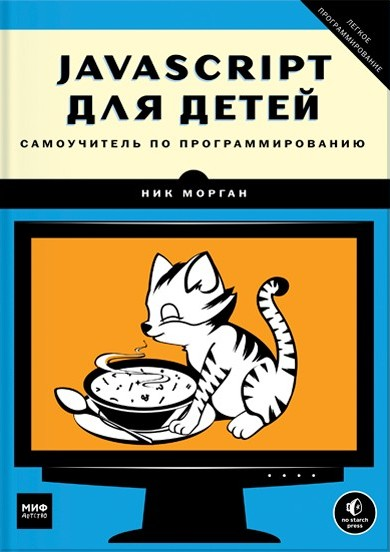

Аннотация
Эта книга позволит вам погрузиться в программирование и с легкостью освоить JavaScript. Вы напишете несколько настоящих игр — поиск сокровищ на карте, «Виселицу» и «Змейку».
На каждом шаге вы сможете оценить результаты своих трудов — в виде работающей программы, а с понятными инструкциями, примерами и забавными иллюстрациями обучение будет только приятным.
Почему именно эта книга?
— Автор книги — Ник Морган, влюбленный в свое дело frontend-разработчик в Twitter, а научный редактор — Дарья Абрамова, основатель «Кодабры» (одной из самых известных детских школ программирования в России).
— В книге через простые и забавные примеры ребенок сможет погрузиться в один из самых популярных языков программирования.
— Каждая новая тема подкрепляется реальной программой, которую дети напишут, опираясь на советы автора. В каждой главе есть задачки для самостоятельного решения. Например, сделать генератор случайных дразнилок или перевести англоязычный текст на «хакерский язык».